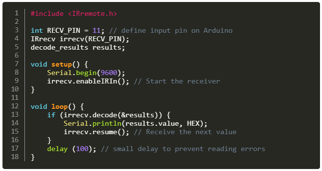

KY-022 INFRARED RECEIVER MODULE


подходящий передатчик инфракрасного света.
|
|
| Приёмник инфракрасного сигнала частотой в 38kHz, для полноценной работы требует подходящий передатчик инфракрасного света. |
|
|  | |
| https://arduinomodules.info/ky-022-infrared-receiver-module/ | |